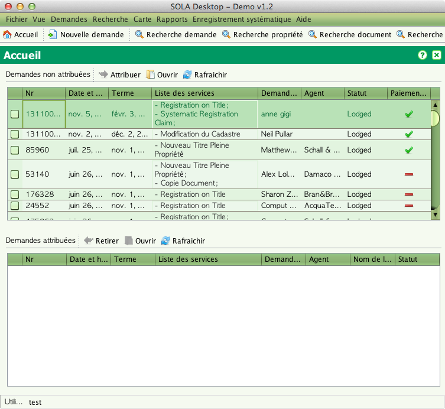
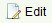

Accueil et Menu principal
L'accueil s'affiche après la connexion. L'accueil affiche une liste
des demandes non-assignées et une liste des demandes assignées à un
utilisateur. Les demandes non-assignées sont en attente d'assignation.

En utilisant le menu principal et les options de la barre d'outil,
il est possible de procéder aux tâches suivantes;
- Quitter l'application (Fichier > Quitter ou icône Fermer la Fenêtre)
- Changer la Langue (Affichage > Langue)
- Choisir le niveau de la session requise (Affichage > Niveau des Sessions)
- Naviguer dans l'Accueil (Accueil > Accueil ou )
- Créer et déposer une nouvelle demande (Demandes > Nouvelle Demande ou
 )
)
- Rechercher une Demande existante (Recherche > Recherche Demande ou
 Recherche Demande)
Recherche Demande)
- Rechercher une Propriété existante (Recherche > Recherche Propriété ou Recherche Propriété)
- Rechercher un Document existant (Recherche > Recherche Document ou Recherche Document)
- Rechercher une Personne existante et ajouter une Personne ( Partie)
- Ouvrir le Plan Cadastral (Plan > Ctrl + M ou
 )
)
- Visualiser l'A Propos du SOLA Desktop (Aide > A Propos…)
- Ouvrir le profil utilisateur pour changer le mot de passe (
 Profil Utilisateur)
Profil Utilisateur)
- Ouvri l'Aide du SOLA Desktop (Aide > Aide)
- Visualiser les Rapports de Dépôt (Rapports > Liste des Dépôts)
- Préparer les Listes d'Affichage Public (Enregistrement Systématique > Déclaration Publique)
- Préparer les Plans d'Affichage Public (Enregistrement Systématique > Plans d'Affichage Public)
- Préparer les Certificats (Enregistrement Systématique > Certificats)
- Préparer Rapports (Enregistrement Systématique > Rapports)
- Sélectionner et assigner une demande non-assignée (Cocher la demande, Click droit sur la demande puis Cliquer sur Assigner
 )
)
- Sélectionner et éditer une demande assignée ou non-assignée (Click droit sur la demande puis Cliquer Ouvrir )
- Sélectionner et retirer une demande assignée (Cocher la demande, Click droit sur la demande puis Cliquer sur Retirer
 )
)
- Rafraîchir la liste des demandes (Cliquer sur Rafraîchir
 )
)
Voir aussi